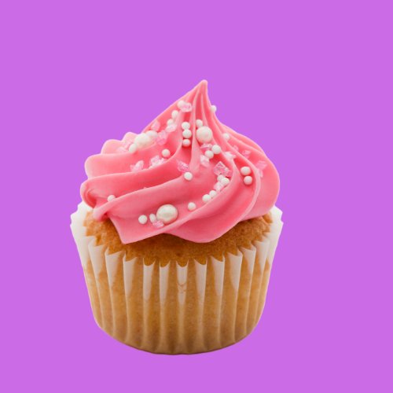

Hello! Today I'm going to be telling you about cupcakes!
A cupcake (also British English: fairy cake; Hiberno-English: bun; Australian English: fairy cake or patty cake) is a small cake designed to serve one person, which may be baked in a small thin paper or aluminum cup. As with larger cakes, frosting and other cake decorations such as fruit and candy may be applied
Down Below are some tasty recipies for cupcakes! cupcake recipie 1 cupcake recipie 2 cupcake recipie 3
You wanna know the history of cupcakes? You've come to the right place!
The earliest extant description of what is now often called a cupcake was in 1796, when a recipe for "a light cake to bake in small cups" was written in American Cookery by Amelia Simmons. The earliest extant documentation of the term cupcake itself was in "Seventy-five Receipts for Pastry, Cakes, and Sweetmeats" in 1828 in Eliza Leslie's Receipts cookbook.
In the early 19th century, there were two different uses for the term cup cake or cupcake. In previous centuries, before muffin tins were widely available, the cakes were often baked in individual pottery cups, ramekins, or molds and took their name from the cups they were baked in. This is the use of the name that has remained, and the name of "cupcake" is now given to any small, round cake that is about the size of a teacup. While English fairy cakes vary in size more than American cupcake, they are traditionally smaller and are rarely topped with elaborate frosting.
